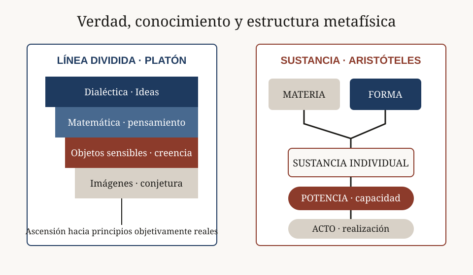

5 min de lectura
La búsqueda de la verdad objetiva: teoría de las ideas y realismo metafísico
Examina cómo las Ideas de Platón y las sustancias de Aristóteles permiten explicar la verdad y el conocimiento científico.

La línea dividida organiza los grados del saber; materia, forma, potencia y acto explican la realidad y el cambio en Aristóteles.
Temas del ensayo
verdad objetiva · teoría de las ideas · sustancia · potencia · acto
Introducción
El problema de la verdad objetiva exige distinguir entre lo que aparece, lo que se opina y lo que puede justificarse como necesario. Los sofistas mostraron que las convenciones cambian y que el discurso puede persuadir sin describir la realidad. Platón y Aristóteles responden que el conocimiento puede descubrir principios que no dependen de la preferencia individual.
Sus respuestas difieren. Platón sitúa las Ideas en un ámbito inteligible separado de los objetos sensibles; Aristóteles explica las formas como principios de las sustancias concretas. Ambos sostienen que la razón puede alcanzar verdades universales y necesarias.
El problema planteado por el relativismo sofista
La posición relativista asociada a Protágoras hace depender la verdad de quien juzga: el hombre sería la medida de todas las cosas. En el Teeteto, Sócrates examina la identificación entre conocimiento y percepción y muestra las dificultades que surgen cuando las impresiones individuales se toman como criterio suficiente (Platón, 1988b, Teeteto, 152a–157c).
La objeción decisiva no es solo psicológica. Si cada afirmación fuese verdadera para quien la sostiene, no habría criterio común para juzgarla, incluido el propio relativismo. Tampoco bastaría la percepción para explicar el conocimiento, pues esta presenta las cosas desde circunstancias particulares. La verdad requiere un criterio que no dependa únicamente de la impresión o del poder persuasivo del discurso.
La teoría platónica de las Ideas
Platón distingue el cambio sensible de la identidad inteligible. Una cosa concreta puede ser grande respecto de otra y pequeña respecto de una tercera. La magnitud sensible no posee identidad absoluta. Sin embargo, el juicio «esto es igual a aquello» presupone la comprensión de la igualdad. La semejanza sensible participa de una medida que no se reduce a ningún caso particular.
La teoría de las Ideas sostiene que los objetos sensibles remiten a realidades inteligibles estables. En la analogía del Sol, Platón presenta el Bien como principio de inteligibilidad y condición del conocimiento verdadero (Platón, 1988a, República, lib. VI, 507a–509b).
La línea dividida describe grados de conocimiento y de realidad: distingue las imágenes, los objetos sensibles, los objetos matemáticos y las Ideas conocidas por la dialéctica (Platón, 1988a, República, lib. VI, 509d–511e). El esquema traza el paso de lo particular a los principios racionales y culmina en el Bien. La alegoría de la caverna amplía ese recorrido al proceso educativo que conduce desde las sombras hasta la contemplación del Bien (Platón, 1988a, República, lib. VII, 514a–521b).
El realismo sustancial de Aristóteles
Aristóteles sitúa las formas en las sustancias concretas y explica la realidad a partir de individuos. La sustancia primera es el ser particular; en los vivientes, materia y forma concurren en su constitución. La ciencia conoce rasgos universales de esas sustancias y explica qué son y por qué poseen determinadas propiedades. Al inicio de la Metafísica, Aristóteles parte del deseo natural de conocer y del papel de la percepción en ese proceso (Aristóteles, 1994, Metafísica, I, 1, 980a–982a).
Aristóteles concede primacía ontológica a los individuos concretos: son sustancias que sirven de sujeto a las propiedades y no existen en otro como accidentes. Las especies y los géneros expresan determinaciones universales mediante las que conocemos qué es cada individuo (Aristóteles, 1994, Metafísica, VII, 1, 1028a–1028b). Así, el conocimiento universal se refiere a seres particulares reales.
La explicación aristotélica usa las cuatro causas. La causa material responde por aquello de lo que una cosa está hecha; la formal, por su estructura inteligible; la eficiente, por el agente que la produce; y la final, por el fin al que se dirige (Aristóteles, 1994, Metafísica, I, 3, 983a24–b6). Conocer una entidad exige responder a estas dimensiones y no detenerse ante su apariencia inmediata. Aristóteles mantiene así la objetividad de la forma y la verdad de la ciencia.
En Metafísica, Aristóteles afirma que el ser se dice de muchas maneras, aunque todas remiten a la sustancia como sentido primero (Aristóteles, 1994, Metafísica, IV, 1–2, 1003a–1005a). La cualidad, la cantidad y la relación se predican de una entidad concreta. El realismo aristotélico vincula así la inteligibilidad universal con la existencia individual.
Potencia y acto
La potencia explica la capacidad real de adquirir una determinación. Una semilla puede desarrollarse como planta porque posee esa capacidad de acuerdo con su naturaleza. El acto designa la realización o perfección de una potencia. Esta distinción permite describir el cambio y reconocer la continuidad del ser a través de sus transformaciones.
Platón explica la estabilidad de lo inteligible mediante las Ideas; Aristóteles da cuenta del devenir al distinguir lo realizado de aquello que puede realizarse. La diferencia entre ambas teorías reside en la relación que establecen entre las formas universales y las sustancias sensibles, no en la oposición entre una realidad inmóvil y otra carente de estructura.
El conocimiento también sigue esta estructura. El alma posee inicialmente la potencia de conocer y actualiza esa potencia al comprender una forma. La evidencia no se obtiene por imposición arbitraria ni por simple asociación. Se logra cuando la razón descubre en los hechos sensibles los principios universales que los hacen inteligibles.
Ciencia, opinión y criterio
Platón identifica la epistḗmē con un saber cuyo objeto es estable y del que pueden darse razones. La opinión puede coincidir por azar con lo verdadero, aunque carece de fundamento firme. El saber dialéctico examina las hipótesis y busca los principios que las justifican.
Aristóteles distingue la ciencia demostrativa de las opiniones probables y de la percepción particular. La demostración parte de principios verdaderos y primeros y explica sus conclusiones por causas. Que una persona pueda equivocarse al juzgar no significa que todos los juicios sean igualmente inciertos: el error puede corregirse precisamente al contrastar lo pensado con la realidad.
La objetividad de la verdad vincula el ser y el conocer. La mente conoce al captar racionalmente las determinaciones inteligibles de las cosas; ese acto permite distinguir el juicio fundado de la impresión subjetiva.
Referencias
Aristóteles. (1994). Metafísica (T. Calvo Martínez, Trad.). Editorial Gredos. (Obra original publicada ca. 350 a. C.).
Platón. (1988a). Diálogos IV: República (C. Eggers Lan, Trad.). Editorial Gredos. (Obra original publicada ca. 375 a. C.).
Platón. (1988b). Diálogos V: Parménides, Teeteto, Sofista, Político (M. I. Santa Cruz, A. Vallejo Campos y N. L. Cordero, Trads.). Editorial Gredos. (Obra original publicada ca. 369 a. C.).
Cómo citar
Equipo de Filosofía Clásica. (2026). La búsqueda de la verdad objetiva: teoría de las ideas y realismo metafísico. Aragón Scholé. https://oregcore-ui.github.io/aragon-schole/articulos/la-busqueda-de-la-verdad-objetiva-teoria-de-las-ideas-y-realismo-metafisico/
Equipo autor
Equipo de Filosofía Clásica
- Victor Manuel Oregon Gomez
- Ayelen Castro Sarmiento
- Naomi Verónica Castro Mayoral
- Gema Daniela Martínez Hernández
- Camila Gabriela Martínez Celedonio